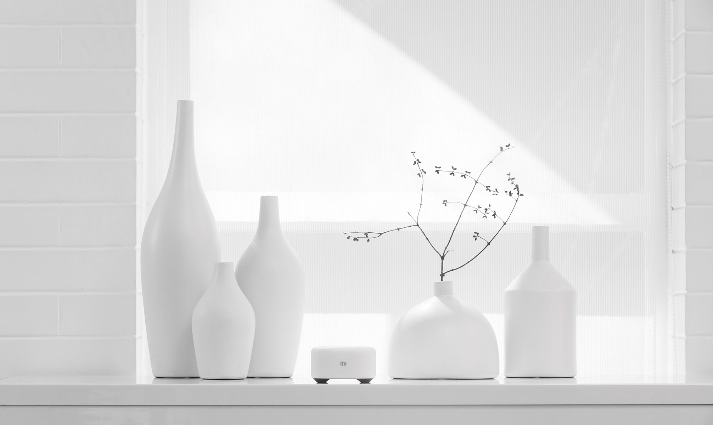
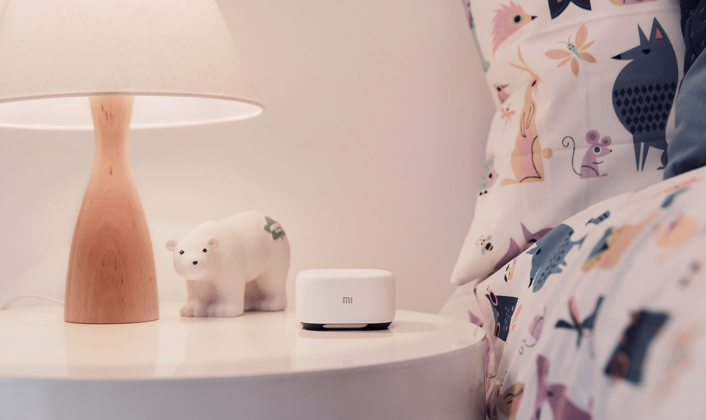
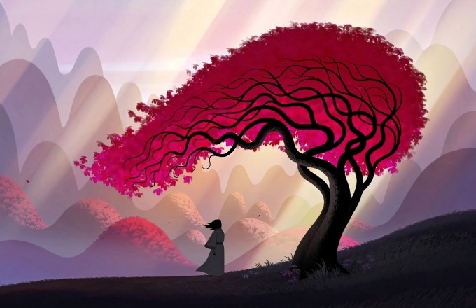

首页
文章
图集
关于



三月31,2018
年少不懂《还珠3》，看懂已是而立年
《还珠3》刚播出的时候，我并不喜欢。 那时候我觉得黄奕没有赵薇眼睛大，没有赵薇活泼可爱。马伊俐又没
三月28,2018
要么孤独，要么庸俗
刷朋友圈的时候，看到一条由三感音乐故事拍摄的短视频，被文案戳中了泪点。 22岁生日，一个人吃火...
三月24,2018
我们都曾畏惧告别
我实际上是个十分口拙的人。而且，特别是在关键时刻尤为口拙。比如告别。 告别似乎是一个普遍公认的隆...
三月18,2018
余生，我们一起吃饭
我和他总是在学校的食堂里相遇。每次遇见他，我总是拉着自己的饭友跑到一个偏僻的角落里就餐。 我不想...
三月14,2018
我终于瘦下来了，却不再喜欢你
许桐最大的毛病就是贪吃。 她尤其喜欢吃甜食，精致的蛋糕、松软的面包、酥脆的饼干都是她的心头好...
三月12,2018
说句再见吧，少年
毕业之后，我和大学的很多同学都留在了这座不大的城市里，两个室友在学校附近租了一套小资豪华房，我...
三月8,2018
失恋，让我成为更好的人
我是在机场认识的栗子姐，跟她在自助充电那儿偶遇，在等待电充满的时间里，我们随便聊了几句。 她说...